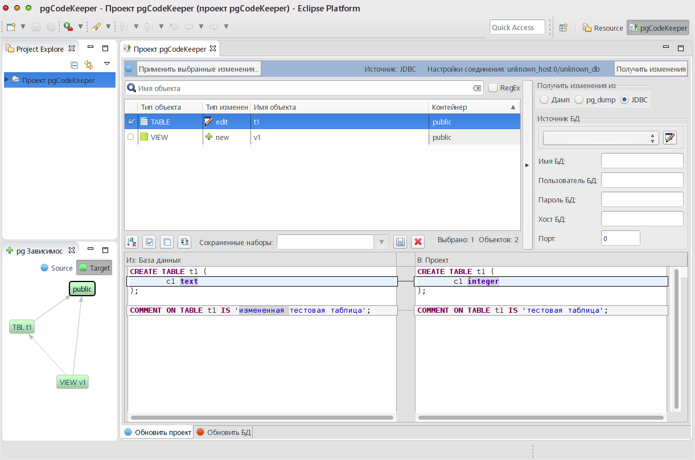

Плагин pgCodeKeeper предназначен для сравнения схем БД PostgreSQL и выборочного применения различий, с учетом возможных зависимостей между объектами схемы.
Работа с pgCodeKeeper осуществляется с помощью проекта. Он представляет собой объекты схемы БД, хранимые в отдельных файлах в иерархической структуре.
С помощью проекта возможно просмотреть структуру объектов-файлов, и создать скрипт наката схемы проекта на БД, или наоборот, модифицировать структуру проекта объектами из какой-либо БД.
